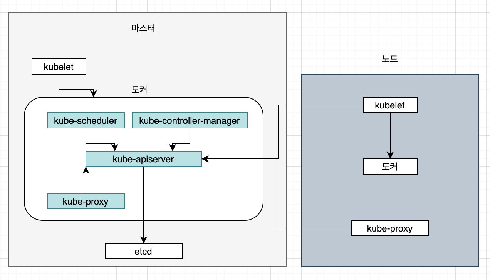
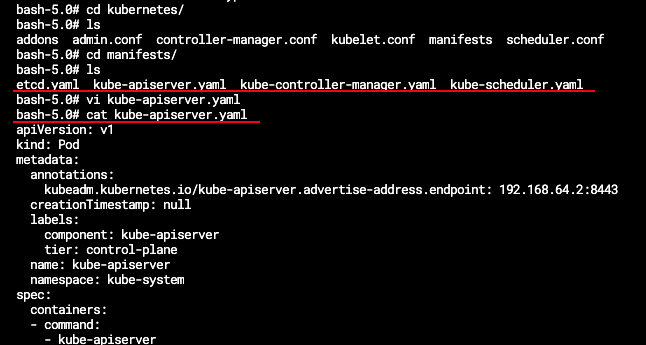
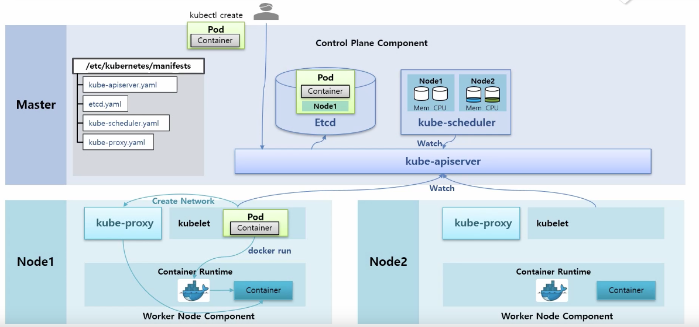
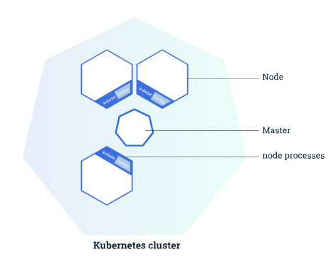

“쿠버네티스 아키텍처 - 쿠버네티스 기본편 (2)”
쿠버네티스 클러스터 전체 구조

- 쿠버네티스는 한대의 마스터와 여러대의 worker 노드들로 구성.
- 컴포넌트들은 파드 형태로 띄워짐.
- /etc/kubernetes/manifests 안 컴포넌트들의 생성하기 위한 yaml 존재.
- 쿠버네티스가 기동시 yaml 파일을 읽어 스태틱으로 파드를 띄움.

마스터
- 클러스터 관리
- 쿠버네티스 설정 환경 저장
- etcd, kube-apiserver, kube-scheduler, kube-controller-manager 등의 컴포넌트 실행
노드
- 쿠버네티스는 한대의 마스터와 여러대의 worker 노드들로 구성
- kubelet, kube-proxy, docker 등 컴포넌트 실행
- 실제 사용하는 컨테이너 대부분 실행
Pod 생성 요청 시 흐름

- 사용자 kubectl create 명령 으로 pod 생성 요청
- kube-api server 로 전달
- etcd 에 파드 입력 정보 저장(etcd는 쿠버네티스에서 여러 정보를 저장하는 디비 역할)
- kube-scheduler가 각각 노드의 자원을 체크, watch 기능으로 etcd에 파드 생성 요청이 들어온게 있는지 감시
4-1. node 자원 상태 확인 후 pod가 어느 노들 가면 좋을지 판단
4-2. etcd에 node 정보 붙여줌 - work node 의 kubelet kube-apiserver를 감시하고 있다가 pod 정보가 있으면 가져와서 pod 생성
- kublet > 도커한테 컨테이너 생성 요청
- kublet > kube-proxy 네트워크 생성 요청
7-1. 모든 노드에 이미 kube-proxy 생성되어져 있음. - kube-proxy가 container 에 네트워크 설정 도와줌
컴포넌트 종류

마스터용 컴포넌트
- 쿠버네티스 주요 기능을 담당하는 컴포넌트들
- 클러스터 전체 관리
노드용 컴포넌트
- 컴포넌트의 실행 환경 관리
애드온
- 클러스터 안에서 필요한 기능을 실행 하는 파드
마스터용 컴포넌트
etcd
- 키,값 저장소
- 필요한 모든 데이터를 저장하는 데이터 베이스 역할
kube-apiserver
- 쿠버네티스는 MSA 구조
- kube-apiservers는 쿠버네티스 클러스터의 api 를 사용할수 있도록 하는 컴포넌트
- 클러스터로 온 요청의 유효성 검증
- 쿠버네티스에 보내는 모든 요청은 apiserver를 거쳐 다른 컴포넌트로 전달
- 모든 통신의 중심
- etcd에는 kube-apiserver만 접근 가능
kube-scheduler
- 현재 클러스터 안에서 자원 할당이 가능한 노드 중 알맞은 노드를 선택해 새로만든 파드 실행
kube-controller-manager
- 파드들을 관리하는 컨트롤러
- 컨트롤러 각각은 개별 프로세스
- 복잡도 감소를 위해 모든 컨트롤러를 바이너리 파일 하나로 컴파일 > 단일 프로세스로 실행
- 클러스터 안에서 새로운 컨트롤러 사용 시 해당 컨트롤러에 해당하는 구조체 생성(Go언어)
- kube-controller-manager가 관리하는 큐에 넣어 실행
노드용 컴포넌트
kubelet
- 클러스터 안 모든 노드에서 실행되는 에이전트
- 파드 컨테이너 들의 실행을 직접 관리
- 컨테이너가 정상적으로 실행되는지 헬스체크 진행
- 쿠버네티스가 만들지 않은 컨테이너는 관리하지 않음
kube-proxy
- 클러스터 안에서 별도의 가상 네트워크의 동작을 관리
- 호스트 네트워크 규칙 관리 및 연결 전달
출처
https://bcho.tistory.com/1258
https://medium.com/coinone/%EC%A2%8C%EC%B6%A9%EC%9A%B0%EB%8F%8C-kubernetes-%EC%9D%B5%ED%9E%88%EA%B8%B0-2-36e17a75d36c
https://www.inflearn.com/course/%EC%BF%A0%EB%B2%84%EB%84%A4%ED%8B%B0%EC%8A%A4-%EA%B8%B0%EC%B4%88/dashboard